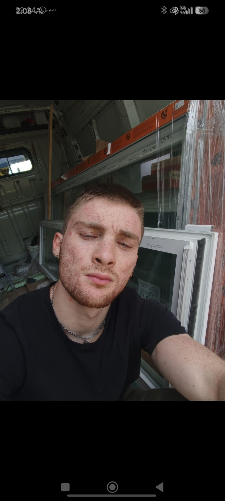
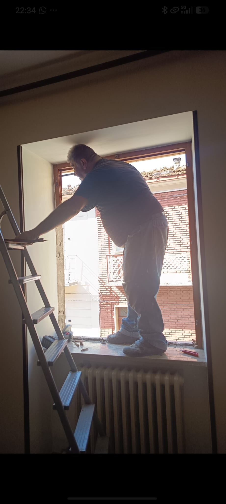
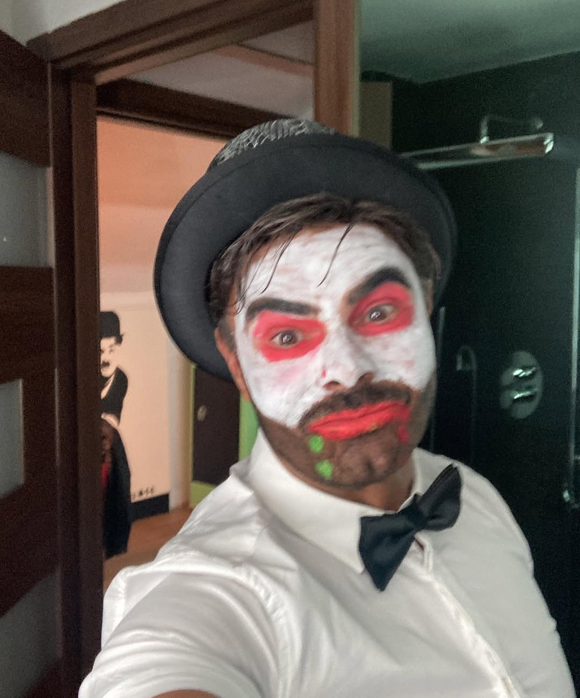
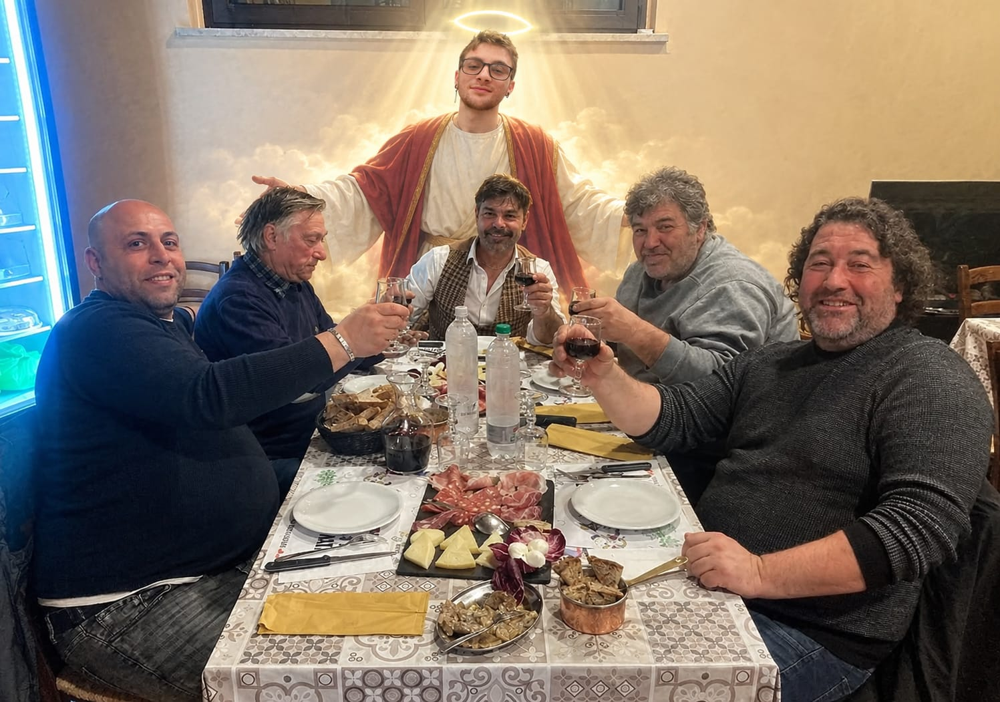

Montaggio Finestre, Tirannia e Miracoli quotidiani

Colonna portante indiscutibile di Stildome. Lavoratore sovrumano, bellezza scultorea e carisma smisurato. Mentre gli altri cercano di capire come funziona una livella, Angelo ha già montato tre doppi vetri con il solo potere dello sguardo. Modesto, magnanimo e protettore dei colleghi oppressi.

Capace di arrampicarsi sui davanzali sfidando le leggi della fisica e della gravità senza imbracatura. Se c'è un infisso da sistemare a 10 metri d'altezza o uno spiffero impossibile, lui si arrampica dove neanche i piccioni osano volare.

Governa il cantiere con la frusta e il terrore. Famoso in tutta la regione per un record storico negativo imbattuto: NON ha MAI portato un cornetto o un caffè in cantiere in tutta la sua carriera. Nonostante i suoi camuffamenti e l'aspetto da 'simpatico intrattenitore', la sua ferocia nel chiedere scadenze impossibili rimane leggendaria.

Ecco una rara testimonianza fotografica dei momenti di pausa in Stildome. Qui possiamo vedere tutto il team di operai riunito a tavola, intendo a rendere grazie e ad adorare il vero e unico salvatore dell'azienda: Angelo Soccio[cite: 5]. Colui che porta la luce (e la pazienza) nei cantieri devastati dalla tirannia di Vittorio[cite: 1, 3, 4, 5].